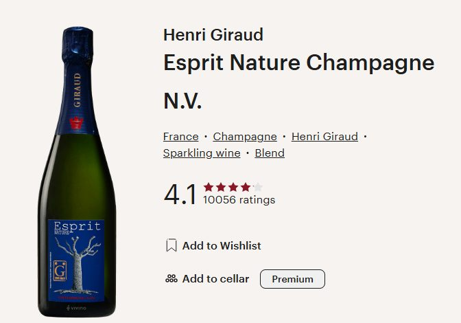
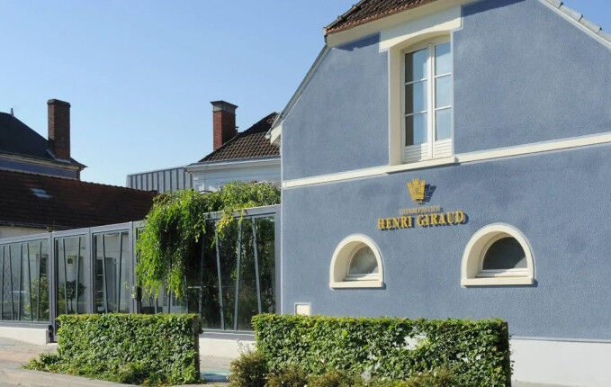
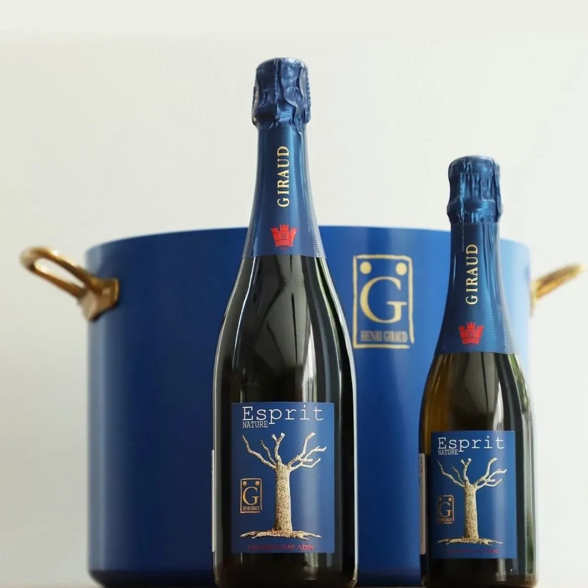
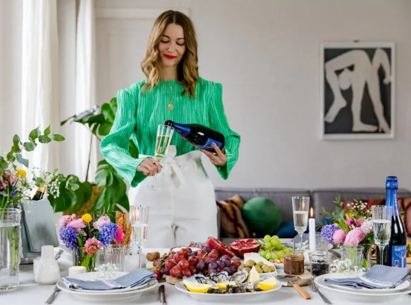

세계 평론가들이 극찬한 명품 샴페인의 정석, 앙리 지로 에스쁘리 나뚜르 브뤼
바쁘고 지친 일상 속에서 잠시나마 숨을 돌리고 완벽한 리프레시를 하고 싶을 때 다들 어떤 와인을 가장 먼저 찾으시나요? 특히 축하할 일이 있거나 소중한 사람들과 모이는 특별한 자리에는 잔 속에서 미세하고 정교한 기포가 끊임없이 피어오르는 샴페인만큼 완벽한 선택이 없답니다. 전 세계적으로 정말 수많은 스파클링 와인이 존재하지만, 그중에서도 세계 3대 샴페인 하우스로 꼽히며 역사와 퀄리티 모두에서 정점을 찍은 명품 샴페인이 있어요. 오늘 아주 자세하고 정성스럽게 소개해 드릴 와인은 바로 샴페인의 거장, 앙리 지로 에스쁘리 나뚜르 브뤼입니다.
바쁘고 지친 일상 속에서 잠시나마 숨을 돌리고 완벽한 리프레시를 하고 싶을 때 다들 어떤 와인을 가장 먼저 찾으시나요? 특히 축하할 일이 있거나 소중한 사람들과 모이는 특별한 자리에는 잔 속에서 미세하고 정교한 기포가 끊임없이 피어오르는 샴페인만큼 완벽한 선택이 없답니다. 전 세계적으로 정말 수많은 스파클링 와인이 존재하지만, 그중에서도 세계 3대 샴페인 하우스로 꼽히며 역사와 퀄리티 모두에서 정점을 찍은 명품 샴페인이 있어요. 오늘 아주 자세하고 정성스럽게 소개해 드릴 와인은 바로 샴페인의 거장, 앙리 지로 에스쁘리 나뚜르 브뤼입니다.

앙리 지로 에스쁘리 나뚜르 브뤼는 단순히 거품이 나는 와인을 넘어, 마시는 순간 왜 이 와인이 전 세계 상위 1%의 사랑을 받는 명품인지 온몸으로 느끼게 해주는 위대한 샴페인이랍니다. 평소 스파클링 와인의 가벼운 느낌에 아쉬움을 느끼셨던 베테랑 애호가분들부터 특별한 날을 더욱 화사하게 빛내줄 궁극의 프리미엄 식전주를 찾으시는 입문자분들까지, 오픈하는 순간 그 자리에 모인 모두를 감탄하게 만드는 독보적인 클래스를 자랑해요. 무더운 날씨 속에서 청량한 활력을 불어넣어 줄 데일리 럭셔리 와인으로도 좋고, 격식 있는 모임이나 파티 자리에서 주최 측의 세련된 안목을 증명해 줄 최고의 치트키가 되어줄 와인이랍니다.
PART 1. 5세기를 이어온 위대한 역사와 로버트 파커의 극찬
앙리 지로 에스쁘리 나뚜르 브뤼를 이야기할 때 절대 빼놓을 수 없는 것이 바로 눈이 부실 정도로 찬란한 역사와 명성입니다. 앙리 지로는 프랑스 샹파뉘 지역의 그랑 크뤼(Grand Cru) 마을인 아이(Ay) 지역에 뿌리를 두고, 무려 17세기인 1625년부터 지금까지 5세기가 넘는 세월 동안 대를 이어 전통을 지켜온 유서 깊은 하우스예요. 500년 가까운 시간 동안 오직 최고의 샴페인을 만들겠다는 일념 하나로 가문의 철학과 양조 노하우를 이어왔으니, 병 속에 담긴 액체의 깊이감이 남다를 수밖에 없겠죠. 프랑스 왕실은 물론이고 전 세계 상류층이 가장 사랑하는 전설적인 와이너리로 명성이 자자하답니다.
특히 세계에서 가장 영향력 있는 와인 평론가인 로버트 파커(Robert Parker)가 이 하우스를 두고 크루그(Krug)나 볼랭저(Bollinger)와 어깨를 나란히 하는 최고의 샴페인 하우스라며 극찬을 아끼지 않은 것으로 유명해요. 로버트 파커는 앙리 지로의 와인들을 맛본 후 샴페인이 보여줄 수 있는 정점의 완벽함이라는 최고의 찬사를 보냈답니다.
앙리 지로가 이토록 특별한 평가를 받는 가장 큰 비결 중 하나는 바로 아르곤 숲(Argonne Forest)에서 자란 고품질 오크통을 사용한 전통적인 양조 방식에 있습니다. 여기에 에스쁘리 나뚜르(Esprit Nature)라는 이름에 걸맞게, 포도밭의 테루아를 훼손하지 않는 친환경 유기농 공법을 고집하여 인위적인 첨가물을 최소화하고 자연이 준 순수한 에너지를 정직하게 표현해 냈습니다. 이 정성 어린 과정 덕분에 거친 느낌 없이 실크처럼 매끄러운 버블과 복합적인 아로마를 완벽하게 완성해 냈습니다.

PART 2. 테크니컬 데이터
* 종류 : 스파클링 와인 (샴페인)
* 용량 : 750ml
* 알코올 도수 : 12%
* 국가 및 생산 지역 : 프랑스 > 샹파뉴
* 포도 품종 : 피노 누아 (Pinot Noir) 80%, 샤도네이 (Chardonnay) 20%
앙리 지로 에스쁘리 나뚜르 브뤼의 구체적인 와인 스타일 지표를 살펴보면 이 와인이 가진 매력적인 방향성이 더욱 명확해져요. 우선 당도는 아주 낮고 깔끔하게 마무리되는 정통 드라이 브뤼 스타일이에요. 입안에서 끈적거리거나 과하게 맴도는 잔당감이 전혀 없기 때문에 마신 후에도 입안이 아주 산뜻하게 떨어지는 것이 최고의 특징이죠.
와인의 무게감을 나타내는 바디는 미디엄에서 라이트 미디엄 정도로 입안을 과하게 짓누르지 않으면서도 경쾌한 기포와 함께 기분 좋은 볼륨감을 선사해요.
마지막으로 와인의 생동감을 결정짓는 산도 지표는 침샘을 완벽하게 자극하는 신선하고 활기찬 최고 수준이랍니다. 날카롭거나 시큼하게 혀를 찌르는 불편한 산미가 아니라, 잘 익은 햇과일과 고급스러운 미네랄리티에서 느껴지는 맑고 깨끗한 산미이기 때문에 한 모금 마시는 순간 입안 전체에 청량한 활력이 가득 차오르는 것을 제대로 느낄 수 있어요. 알코올 도수도 부담스럽지 않아 식사를 즐기며 기분 좋게 잔을 비워내실 수 있습니다.

PART 3. 앙리 지로 에스쁘리 나뚜르 브뤼 테이스팅 노트
아주 시원하게 칠링을 마친 앙리 지로 에스쁘리 나뚜르 브뤼를 깨끗한 샴페인 글라스 잔에 조심스럽게 채우면, 투명하고 영롱한 황금빛 골드 컬러 사이로 아주 미세하고 정교한 기포들이 예술 작품처럼 끊임없이 위로 피어오르는 아름다운 모습을 볼 수 있어요. 시각적으로 주는 이 눈부신 버블의 스파클링 움직임만으로도 청량한 개운함이 고스란히 전해지죠.
잔을 가볍게 돌려 코끝을 대면 인위적인 향 대신 잘 익은 노란 사과, 서양배, 그리고 싱그러운 복숭아의 과일 아로마가 먼저 기분 좋게 번집니다. 이어서 은은한 바람을 타고 오는 듯한 아카시아 같은 흰 꽃 아로마와 함께, 고급 오크 숙성에서 오는 고소한 비스킷, 구운 견과류, 그리고 은은한 꿀 향이 화사하게 올라와요. 과실의 신선함과 숙성 샴페인 특유의 고소한 뉘앙스가 복합적으로 어우러져 한층 더 우아하고 기분 좋은 인상을 남긴답니다.
입에 가볍게 머금으면 톡 쏘는 탄산의 탄력감과 드라이한 미감이 아주 일품이에요. 피노 누아 품종이 주는 단단한 구조감과 샤도네이의 매력적인 산미가 혀끝에 촉촉하게 퍼지면서 중심을 단단하게 잡아주고, 목 넘김 이후에는 산뜻하고 상큼한 여운이 깨끗하고 길게 이어집니다. 무겁고 텁텁한 느낌이 전혀 없어서 마시는 내내 속이 편안하고 맑게 리프레시되는 느낌이랄까요. 군더더기 없는 정결한 밸런스 덕분에 한 잔을 비우고 나면 나도 모르게 자연스럽게 다음 잔을 채우게 만드는 매력이 가득해요.

PART 4. 이런 날씨에, 이런 자리에 부담 없이 꺼내기 좋아요
앙리 지로 에스쁘리 나뚜르 브뤼의 가장 강력한 무기는 요즘같이 후끈하고 더운 날씨에 완벽하게 부합하는 '최고의 럭셔리 데일리 와인'이자 파티 치트키라는 점이에요. 태양이 내리쬐는 낮 시간이나 후덥지근한 저녁에 아이스 버킷에 얼음을 가득 채워 이 와인을 꽁꽁 칠링한 뒤 한 잔 즐기면, 쨍한 청량감과 짜릿한 기포가 여름철 더위를 한순간에 싹 날려준답니다. 날이 더울수록 청량하고 가벼운 와인을 자주 찾게 되는데, 그럴 때 나를 위한 특별한 보상으로 꺼내 마시기에 이만한 와인이 없어요.
게다가 대단히 세련되면서도 클래식한 골드 라벨 디자인을 지니고 있어서 수십 명의 게스트가 모이는 스탠딩 파티, 기업 행사, 오픈 이벤트 같은 대규모 자리에서 파티의 품격을 수직 상승시켜 주는 신의 한 수가 되어준답니다. 수십 명의 게스트에게 끊임없이 잔을 채워주어도 주최 측의 엄청난 안목을 자랑할 수 있고, 손님 모두가 대만족할 수 있는 독보적인 대중성과 품격을 품고 있어요. 주변 소중한 분들에게 마음을 전하는 특별한 비즈니스 답례품이나 와인 선물용으로도 인기가 정말 높아요.
음식 매칭의 폭도 꽤나 넓은 편이어서 페어링 실패 확률이 제로에 가깝답니다. 고급 샴페인 고유의 섬세한 풍미와 드라이한 마무리 덕분에 신선한 제철 생선 요리들과 아주 좋은 궁합을 보여준답니다. 맑은 감칠맛을 가진 광어회나 도미회, 새콤달콤한 초대리가 가미된 고급 초밥은 물론이고 신선한 캐비아, 훈제 연어 샐러드 같은 가벼운 에피타이저 요리들과는 실패할 수 없는 정석적인 매칭을 보여줍니다.
재미있는 점은 이 와인이 가진 청량한 탄산과 산미 덕분에 가벼운 스낵류나 이색적인 식단과도 아주 잘 어우러진다는 거예요. 파티장에서 자주 보이는 짭조름하고 바삭한 나초 칩에 치즈 소스를 듬뿍 찍어 이 와인과 곁들여 보세요. 나초의 짠맛을 와인의 은은한 과실 향이 부드럽게 감싸 안고, 자칫 느끼할 수 있는 입안을 샴페인의 명품 기포가 개운하게 씻어줘서 아주 훌륭하게 어우러집니다. 또한 담백한 베지테리안 식단이나 카나페와 함께해도 와인의 맛이 요리 본연의 맛을 해치지 않고 환상의 궁합을 보여준답니다!
지친 하루 끝에 온몸을 시원하게 마무리해 줄 멋진 스파클링을 찾고 계시거나, 다가오는 이벤트와 스탠딩 파티에서 모두의 감탄을 자아낼 최고의 샴페인을 고민 중이시라면 5세기의 역사와 평론가들의 찬사를 담아낸 앙리 지로 에스쁘리 나뚜르 브뤼를 강력하게 추천해 드려요. 품격과 맛, 그리고 감동을 모두 잡은 경쾌한 버블이 여러분의 파티와 일상을 더욱 화사하고 행복하게 채워줄 거예요. 오늘 저녁은 시원하게 칠링된 앙리 지로와 함께 행복한 와인 라이프를 즐겨보시길 바랍니다.

이 글은 땡큐와인 네이버 블로그에 먼저 올린 글이에요.